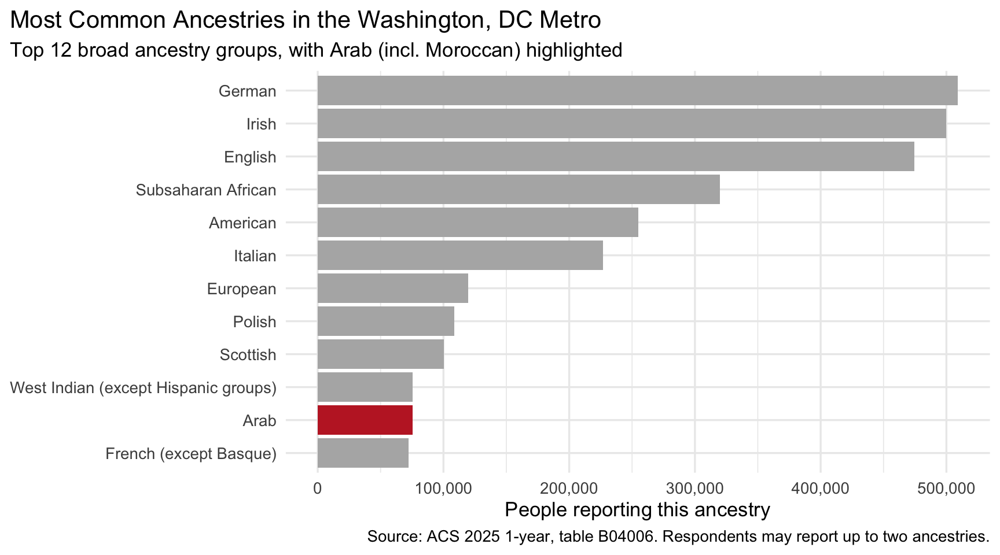
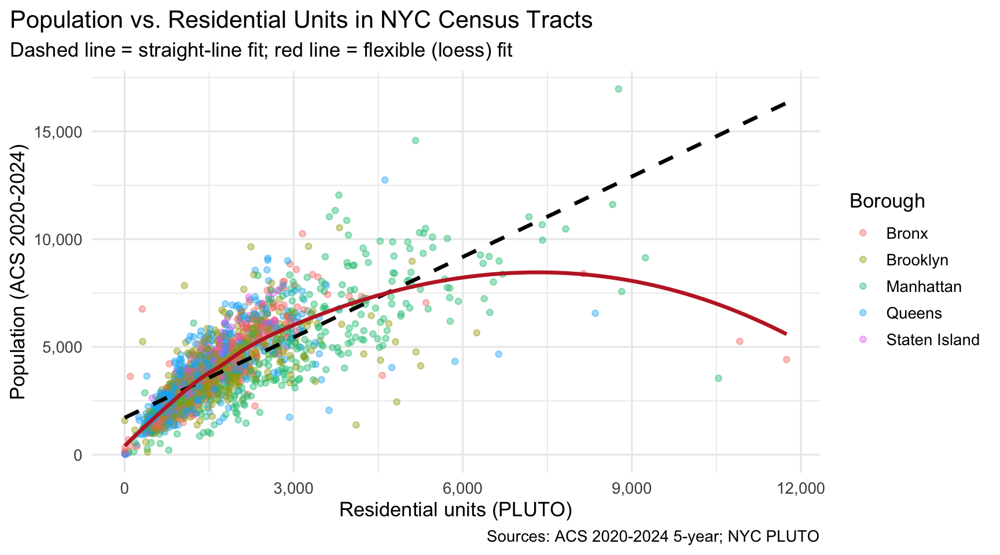
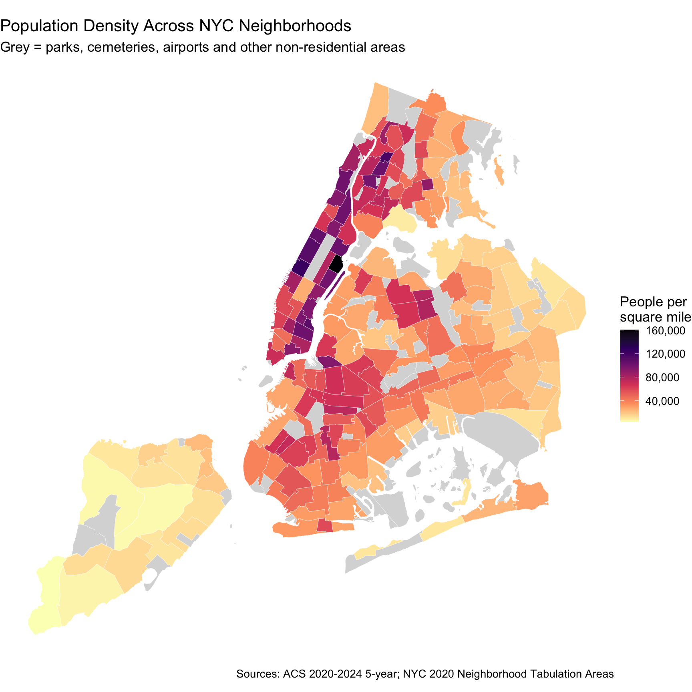
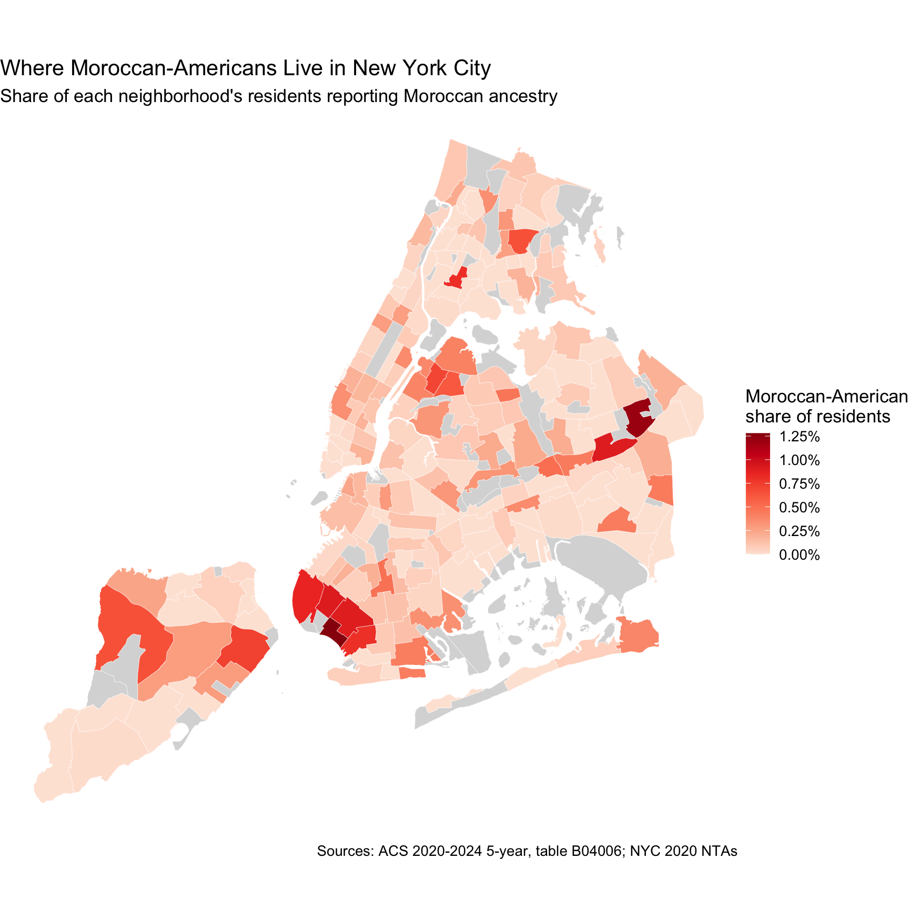
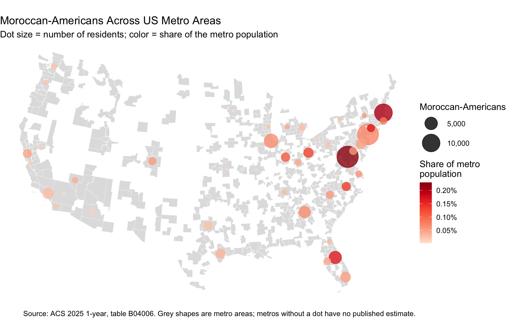

library(tidyverse)
library(tidycensus)
library(sf)
library(httr2)
library(gt)
# Folder where all data files for this project are saved
if (!dir.exists(file.path("data", "mp03"))) {
dir.create(file.path("data", "mp03"), recursive = TRUE)
}Where My People At? Moroccan-Americans in NYC and the US
Introduction
This report is part of Welcomed by the New Colossus: An Atlas of American Communities, and my entry focuses on Moroccan-Americans. The goal is to explore where Moroccan-Americans live within New York City and where they are most concentrated across the United States. To do this, I used three main sources: the American Community Survey (ACS) from the U.S. Census Bureau for population and ancestry information, NYC’s Neighborhood Tabulation Areas for official neighborhood boundaries, and NYC PLUTO, the city’s building database, for information about housing, office space, and building heights.
The report first covers the data-loading process, followed by several exploratory questions about New York City’s population and housing. It then presents the Atlas entry, using maps and population data to show where Moroccan-Americans live in NYC and across the country. One interesting finding is that the Washington, DC metropolitan area has a slightly larger Moroccan-American population than the New York metropolitan area.
Data Acquisition
The next section downloads ACS population and ancestry data, NYC neighborhood boundaries, and PLUTO building data, which are cached so they can be reused without downloading them again every time the code runs.
# Task 1: metro-area (CBSA) total and Moroccan population, latest ACS-1
# Downloads only if the file isn't saved yet (caching)
cbsa_file <- file.path("data", "mp03", "cbsa_moroccan.shp")
if (!file.exists(cbsa_file)) {
get_acs(
geography = "cbsa",
variables = c(total = "B01003_001", moroccan = "B04006_011"),
year = 2025,
survey = "acs1",
geometry = TRUE
) |>
write_sf(cbsa_file)
}
cbsa_pop <- read_sf(cbsa_file)# Task 2: NYC census tract total and Moroccan population, latest ACS-5
# The 5 NYC counties = the 5 boroughs
tract_file <- file.path("data", "mp03", "nyc_tracts_moroccan.shp")
if (!file.exists(tract_file)) {
get_acs(
geography = "tract",
variables = c(total = "B01003_001", moroccan = "B04006_011",
housing = "B25001_001"),
state = "NY",
county = c("New York", "Kings", "Queens", "Bronx", "Richmond"),
year = 2024,
survey = "acs5",
geometry = TRUE
) |>
write_sf(tract_file)
}
nyc_tracts <- read_sf(tract_file)# Task 3: download, unzip and read NYC's 2020 Neighborhood Tabulation Areas
load_nyc_nta <- function() {
data_dir <- file.path("data", "mp03")
if (!dir.exists(data_dir)) {
dir.create(data_dir, recursive = TRUE)
}
nta_url <- paste0(
"https://s-media.nyc.gov/agencies/dcp/assets/files/zip/data-tools/",
"bytes/neighborhood-tabulation-areas/nynta2020_26d.zip"
)
zip_file <- file.path(data_dir, "nyc_nta_2020.zip")
nta_dir <- file.path(data_dir, "nyc_nta_2020")
# Download only if we don't already have the zip (caching)
if (!file.exists(zip_file)) {
download.file(nta_url, destfile = zip_file, mode = "wb")
}
# Unzip only once
if (!dir.exists(nta_dir)) {
unzip(zip_file, exdir = nta_dir)
}
# Find the .shp file inside the unzipped folder and read it
shp_file <- list.files(nta_dir, pattern = "\\.shp$",
recursive = TRUE, full.names = TRUE)[1]
# Keep only the columns we need
read_sf(shp_file) |>
select(NTA2020, NTAName, BoroName, NTAType)
}
nyc_nta <- load_nyc_nta()# Task 4: aggregate tract populations up to NTAs (neighborhoods)
# 1. One row per tract, with 'total' and 'moroccan' as columns
tract_counts <- nyc_tracts |>
st_drop_geometry() |>
select(GEOID, variable, estimate) |>
pivot_wider(names_from = variable, values_from = estimate)
# 2. Attach the tract shapes, drop empty (water) shapes,
# and convert to the same coordinate system as the NTA map
nyc_tracts_wide <- nyc_tracts |>
filter(variable == "total") |>
select(GEOID, geometry) |>
left_join(tract_counts, by = "GEOID") |>
filter(!st_is_empty(geometry)) |>
st_transform(st_crs(nyc_nta))
# 3. Spatial join: each tract goes to the NTA it overlaps most
tract_nta <- st_join(nyc_tracts_wide, nyc_nta, largest = TRUE)
# 4. Drop shapes, add up people per NTA
nta_counts <- tract_nta |>
st_drop_geometry() |>
group_by(NTA2020) |>
summarize(
total = sum(total, na.rm = TRUE),
moroccan = sum(moroccan, na.rm = TRUE),
n_tracts = n()
)
# 5. Reconnect the totals to the NTA shapes
nyc_nta_pop <- nyc_nta |>
left_join(nta_counts, by = "NTA2020") |>
mutate(pct_moroccan = if_else(total > 0, moroccan / total, NA_real_))# Task 5: download NYC PLUTO page by page through the SODA2 API (cached)
load_pluto <- function() {
pluto_file <- file.path("data", "mp03", "pluto.csv")
if (!file.exists(pluto_file)) {
base_url <- "https://data.cityofnewyork.us/resource/64uk-42ks.csv"
page_size <- 50000
offset <- 0
pages <- list()
repeat {
page <- request(base_url) |>
req_url_query(
`$select` = paste(
"bbl,borough,bct2020,landuse,unitsres,resarea,",
"officearea,comarea,bldgarea,numfloors",
sep = ""
),
`$order` = "bbl",
`$limit` = page_size,
`$offset` = offset
) |>
req_perform() |>
resp_body_string() |>
I() |>
read_csv(col_types = cols(.default = col_character()))
pages[[length(pages) + 1]] <- page
# A short page means we reached the end of the data
if (nrow(page) < page_size) break
offset <- offset + page_size
}
bind_rows(pages) |>
write_csv(pluto_file)
}
read_csv(pluto_file,
col_types = cols(bbl = col_character(),
bct2020 = col_character(),
.default = col_guess()))
}
pluto <- load_pluto()Which tract has the most office space?
# Convert PLUTO's tract ID (borough digit + 6-digit tract)
# to the census GEOID (state 36 + county FIPS + 6-digit tract)
boro_to_county <- c("1" = "061", "2" = "005", "3" = "047",
"4" = "081", "5" = "085")
pluto <- pluto |>
mutate(GEOID = if_else(
is.na(bct2020),
NA_character_,
paste0("36", boro_to_county[str_sub(bct2020, 1, 1)],
str_sub(bct2020, 2, 7))
))
# Q1: total office floor area per tract (NA treated as 0, per the hint)
office_by_tract <- pluto |>
filter(!is.na(GEOID)) |>
mutate(officearea = replace_na(officearea, 0)) |>
group_by(GEOID) |>
summarize(office_area = sum(officearea))
top_office <- office_by_tract |>
slice_max(office_area, n = 1) |>
left_join(
tract_nta |> st_drop_geometry() |> select(GEOID, NTAName, BoroName),
by = "GEOID"
)The census tract with the most office space is 36061000900, located in Financial District-Battery Park City in Manhattan, with approximately 18,354,103 square feet of office space. This makes sense because the area includes the World Trade Center.
Which neighborhood has the most residential units?
# Building totals per tract (reused in later questions)
pluto_tract <- pluto |>
filter(!is.na(GEOID)) |>
group_by(GEOID) |>
summarize(
res_units = sum(unitsres, na.rm = TRUE),
res_area = sum(resarea, na.rm = TRUE),
com_area = sum(comarea, na.rm = TRUE),
bldg_area = sum(bldgarea, na.rm = TRUE)
)
# Which NTA each tract belongs to, plus its population
tract_lookup <- tract_nta |>
st_drop_geometry() |>
select(GEOID, NTA2020, NTAName, BoroName, total, moroccan, housing)
# Q2: residential units per NTA, top 5
units_by_nta <- pluto_tract |>
inner_join(tract_lookup, by = "GEOID") |>
group_by(NTAName, BoroName) |>
summarize(res_units = sum(res_units), .groups = "drop") |>
slice_max(res_units, n = 5)
units_by_nta |>
gt() |>
tab_header(
title = "NYC Neighborhoods with the Most Residential Units",
subtitle = "Source: NYC PLUTO"
) |>
cols_label(
NTAName = "Neighborhood",
BoroName = "Borough",
res_units = "Residential Units"
) |>
fmt_number(res_units, decimals = 0)| NYC Neighborhoods with the Most Residential Units | ||
| Source: NYC PLUTO | ||
| Neighborhood | Borough | Residential Units |
|---|---|---|
| Upper East Side-Lenox Hill-Roosevelt Island | Manhattan | 60,306 |
| Upper West Side (Central) | Manhattan | 57,314 |
| Upper East Side-Yorkville | Manhattan | 50,986 |
| Chelsea-Hudson Yards | Manhattan | 46,130 |
| Upper West Side-Lincoln Square | Manhattan | 45,384 |
The neighborhood with the highest number of residential units is Upper East Side-Lenox Hill-Roosevelt Island, with 60,306 residential units. All five neighborhoods with the most residential units are located in Manhattan.
Which tract has the highest population density?
# Population density per tract, measured two ways
density_tract <- tract_lookup |>
inner_join(pluto_tract, by = "GEOID") |>
# Keep clearly residential tracts, and drop tracts where PLUTO's unit
# count disagrees with the census housing count (big lots that span tracts)
filter(total >= 1000, res_units >= 100, res_area > 0,
between(res_units / housing, 0.5, 2)) |>
mutate(
pop_per_1000_sqft = total / res_area * 1000,
pop_per_unit = total / res_units
)
top_by_area <- density_tract |> slice_max(pop_per_1000_sqft, n = 5)
top_by_unit <- density_tract |> slice_max(pop_per_unit, n = 5)
# Does the densest tract change depending on the measure?
same_top <- top_by_area$GEOID[1] == top_by_unit$GEOID[1]
bind_rows(
"By residential floor area" = top_by_area,
"By residential unit" = top_by_unit,
.id = "measure"
) |>
select(measure, GEOID, NTAName, BoroName, total,
pop_per_1000_sqft, pop_per_unit) |>
gt(groupname_col = "measure") |>
tab_header(
title = "Most Densely Populated NYC Census Tracts",
subtitle = "Top 5 by each density measure | Sources: ACS 2020-2024, NYC PLUTO"
) |>
cols_label(
GEOID = "Tract",
NTAName = "Neighborhood",
BoroName = "Borough",
total = "Population",
pop_per_1000_sqft = "People per 1,000 sq ft",
pop_per_unit = "People per Unit"
) |>
fmt_number(total, decimals = 0) |>
fmt_number(c(pop_per_1000_sqft, pop_per_unit), decimals = 2)| Most Densely Populated NYC Census Tracts | |||||
| Top 5 by each density measure | Sources: ACS 2020-2024, NYC PLUTO | |||||
| Tract | Neighborhood | Borough | Population | People per 1,000 sq ft | People per Unit |
|---|---|---|---|---|---|
| By residential floor area | |||||
| 36081156700 | Bellerose | Queens | 1,751 | 7.28 | 7.00 |
| 36005039700 | Belmont | Bronx | 4,219 | 6.74 | 5.33 |
| 36085002700 | Tompkinsville-Stapleton-Clifton-Fox Hills | Staten Island | 2,627 | 5.77 | 5.38 |
| 36081041100 | Corona | Queens | 4,250 | 5.69 | 4.76 |
| 36081084602 | South Ozone Park | Queens | 1,600 | 5.65 | 6.20 |
| By residential unit | |||||
| 36047053102 | South Williamsburg | Brooklyn | 7,846 | 5.30 | 7.39 |
| 36081156700 | Bellerose | Queens | 1,751 | 7.28 | 7.00 |
| 36047045000 | Mapleton-Midwood (West) | Brooklyn | 1,147 | 4.42 | 6.30 |
| 36081084602 | South Ozone Park | Queens | 1,600 | 5.65 | 6.20 |
| 36085002700 | Tompkinsville-Stapleton-Clifton-Fox Hills | Staten Island | 2,627 | 5.77 | 5.38 |
The highest density by floor area is in Bellerose, tract 36081156700, with 7.28 people per 1,000 square feet. By residential unit, the densest neighborhood is South Williamsburg, with 7.39 people per unit. This shows that the answer changes depending on the measurement used. I compared 2161 tracts after removing very small tracts and tracts where PLUTO’s residential unit counts did not match the census counts, because large properties can cross tract boundaries.
What is the ancestry mix in the Washington, DC metro?
# Q5: all ancestry groups (table B04006) for the Washington DC metro
dc_file <- file.path("data", "mp03", "dc_ancestry.csv")
if (!file.exists(dc_file)) {
# Readable labels for each B04006 variable
ancestry_labels <- load_variables(2025, "acs1") |>
filter(str_starts(name, "B04006_")) |>
select(variable = name, label)
get_acs(
geography = "cbsa",
table = "B04006",
year = 2025,
survey = "acs1"
) |>
filter(str_detect(NAME, "^Washington-Arlington")) |>
left_join(ancestry_labels, by = "variable") |>
write_csv(dc_file)
}
dc_ancestry <- read_csv(dc_file, show_col_types = FALSE)
# Keep broad groups only (e.g. "Irish", "Arab"), not sub-groups
# like "Arab:!!Moroccan", so nobody is counted twice
dc_top <- dc_ancestry |>
filter(str_count(label, "!!") == 2) |>
mutate(ancestry = label |>
str_remove("^Estimate!!Total:!!") |>
str_remove(":$")) |>
# Drop catch-all categories that aren't real ancestries
filter(!ancestry %in% c("Other groups", "Unclassified or not reported")) |>
# Top 12, plus Arab so our group is always shown
filter(rank(-estimate) <= 12 | ancestry == "Arab")
ggplot(dc_top,
aes(x = estimate,
y = fct_reorder(ancestry, estimate),
fill = ancestry == "Arab")) +
geom_col() +
scale_x_continuous(labels = scales::comma) +
scale_fill_manual(values = c(`FALSE` = "grey70", `TRUE` = "#C1272D"),
guide = "none") +
labs(
title = "Most Common Ancestries in the Washington, DC Metro",
subtitle = "Top 12 broad ancestry groups, with Arab (incl. Moroccan) highlighted",
x = "People reporting this ancestry",
y = NULL,
caption = "Source: ACS 2025 1-year, table B04006. Respondents may report up to two ancestries."
) +
theme_minimal(base_size = 13) +
theme(plot.title.position = "plot")
The largest ancestry groups in the Washington, DC metro area are German, Irish, and English. Arab ranks 11th among the top 12 groups, just ahead of French, with approximately 75,332 people reporting Arab ancestry. The numbers may overlap because people can report two ancestries, so one person can be counted in more than one group.
Where do Moroccan-Americans live across the US?
# Q6: national total of Moroccan-Americans (denominator), cached
us_file <- file.path("data", "mp03", "us_moroccan.csv")
if (!file.exists(us_file)) {
get_acs(
geography = "us",
variables = c(total = "B01003_001", moroccan = "B04006_011"),
year = 2025,
survey = "acs1"
) |>
write_csv(us_file)
}
us_moroccan <- read_csv(us_file, show_col_types = FALSE) |>
filter(variable == "moroccan") |>
pull(estimate)
# Each metro's share of ALL Moroccan-Americans in the US
metro_share <- cbsa_wide |>
mutate(
metro = str_remove(NAME, " Metro Area"),
share_of_us = moroccan / us_moroccan
) |>
arrange(desc(moroccan)) |>
mutate(cumulative_share = cumsum(share_of_us))
# Values for the text
ny_share <- metro_share |>
filter(str_detect(NAME, "New York-Newark")) |>
pull(share_of_us)
top10_share <- metro_share$cumulative_share[10]
metro_share |>
slice_head(n = 10) |>
select(metro, moroccan, share_of_us, cumulative_share) |>
gt() |>
tab_header(
title = "Where Moroccan-Americans Live",
subtitle = "10 metro areas with the most Moroccan-American residents | Source: ACS 2025 1-year"
) |>
cols_label(
metro = "Metro Area",
moroccan = "Moroccan-Americans",
share_of_us = "Share of US Total",
cumulative_share = "Cumulative Share"
) |>
fmt_number(moroccan, decimals = 0) |>
fmt_percent(c(share_of_us, cumulative_share), decimals = 1)| Where Moroccan-Americans Live | |||
| 10 metro areas with the most Moroccan-American residents | Source: ACS 2025 1-year | |||
| Metro Area | Moroccan-Americans | Share of US Total | Cumulative Share |
|---|---|---|---|
| Washington-Arlington-Alexandria, DC-VA-MD-WV | 14,820 | 12.3% | 12.3% |
| New York-Newark-Jersey City, NY-NJ | 14,292 | 11.9% | 24.1% |
| Boston-Cambridge-Newton, MA-NH | 10,188 | 8.4% | 32.6% |
| Chicago-Naperville-Elgin, IL-IN | 6,027 | 5.0% | 37.6% |
| Orlando-Kissimmee-Sanford, FL | 4,851 | 4.0% | 41.6% |
| Atlanta-Sandy Springs-Roswell, GA | 4,164 | 3.5% | 45.1% |
| Los Angeles-Long Beach-Anaheim, CA | 3,598 | 3.0% | 48.0% |
| Miami-Fort Lauderdale-West Palm Beach, FL | 3,155 | 2.6% | 50.7% |
| Philadelphia-Camden-Wilmington, PA-NJ-DE-MD | 3,053 | 2.5% | 53.2% |
| Columbus, OH | 2,843 | 2.4% | 55.5% |
There are 120,605 Moroccan-Americans across the United States. Surprisingly, the Washington, DC metro area has more Moroccan-Americans (14,820) than the New York metro area (14,292). The New York metro accounts for 11.9% of the total, while the top 10 metro areas together account for 55.5%, showing that more than half of the Moroccan-American population is concentrated in these areas.
Is the relationship between population and housing linear?
# Q7: tract population vs. residential units, all NYC tracts with housing
pop_housing <- tract_lookup |>
inner_join(pluto_tract, by = "GEOID") |>
filter(total > 0, res_units > 0)
# Correlation for the text
pop_units_cor <- cor(pop_housing$total, pop_housing$res_units)
ggplot(pop_housing, aes(x = res_units, y = total)) +
geom_point(aes(color = BoroName), alpha = 0.4, size = 1.5) +
geom_smooth(method = "lm", se = FALSE, color = "black", linetype = "dashed") +
geom_smooth(method = "loess", se = FALSE, color = "#C1272D") +
scale_x_continuous(labels = scales::comma) +
scale_y_continuous(labels = scales::comma) +
labs(
title = "Population vs. Residential Units in NYC Census Tracts",
subtitle = "Dashed line = straight-line fit; red line = flexible (loess) fit",
x = "Residential units (PLUTO)",
y = "Population (ACS 2020-2024)",
color = "Borough",
caption = "Sources: ACS 2020-2024 5-year; NYC PLUTO"
) +
theme_minimal(base_size = 13) +
theme(plot.title.position = "plot")
The relationship between population and residential units is positive but more complex than a straight line. The correlation is 0.77, showing a positive relationship between the two variables. However, the red curve starts flattening around 4,000–5,000 units and reaches its peak near 7,000 units. There are only a few census tracts with more than 8,000 units, so the downward trend at the far right should be interpreted carefully.
Which neighborhoods have the tallest buildings?
# Q8: building height (number of floors) by NTA
floors_by_nta <- pluto |>
filter(!is.na(GEOID), numfloors > 0) |>
inner_join(tract_lookup |> select(GEOID, NTAName, BoroName),
by = "GEOID") |>
group_by(NTAName, BoroName) |>
summarize(
n_buildings = n(),
avg_floors = mean(numfloors),
max_floors = max(numfloors),
.groups = "drop"
) |>
# Ignore NTAs with very few buildings (parks, airports, etc.)
filter(n_buildings >= 50) |>
slice_max(avg_floors, n = 10)
floors_by_nta |>
gt() |>
tab_header(
title = "NYC Neighborhoods with the Tallest Buildings",
subtitle = "Top 10 by average number of floors | Source: NYC PLUTO"
) |>
cols_label(
NTAName = "Neighborhood",
BoroName = "Borough",
n_buildings = "Buildings",
avg_floors = "Average Floors",
max_floors = "Tallest Building (Floors)"
) |>
fmt_number(n_buildings, decimals = 0) |>
fmt_number(avg_floors, decimals = 1) |>
fmt_number(max_floors, decimals = 0)| NYC Neighborhoods with the Tallest Buildings | ||||
| Top 10 by average number of floors | Source: NYC PLUTO | ||||
| Neighborhood | Borough | Buildings | Average Floors | Tallest Building (Floors) |
|---|---|---|---|---|
| Financial District-Battery Park City | Manhattan | 515 | 16.2 | 104 |
| Midtown-Times Square | Manhattan | 1,362 | 15.2 | 98 |
| East Midtown-Turtle Bay | Manhattan | 1,029 | 10.5 | 77 |
| Midtown South-Flatiron-Union Square | Manhattan | 1,193 | 10.0 | 102 |
| Upper West Side-Lincoln Square | Manhattan | 886 | 8.6 | 54 |
| Murray Hill-Kips Bay | Manhattan | 1,089 | 8.1 | 57 |
| Upper East Side-Lenox Hill-Roosevelt Island | Manhattan | 1,293 | 7.5 | 57 |
| Tribeca-Civic Center | Manhattan | 829 | 7.5 | 70 |
| Morningside Heights | Manhattan | 421 | 7.3 | 42 |
| Upper East Side-Carnegie Hill | Manhattan | 2,567 | 7.0 | 51 |
The Financial District-Battery Park City has the highest average building height, with 16.2 floors on average. All 10 neighborhoods in the table are located in Manhattan, showing that the tallest buildings are concentrated in this borough. The tallest building in the Financial District has 104 floors, matching One World Trade Center, while Midtown South has a 102-floor building, matching the Empire State Building.
How does population density vary across NYC?
# Q9: people per square mile in each NTA
# Non-residential NTAs (parks, cemeteries, airports) are greyed out,
# since their density would be misleadingly close to zero
nta_density <- nyc_nta_pop |>
mutate(
area_sq_mi = as.numeric(units::set_units(st_area(geometry), "mi^2")),
density = if_else(as.character(NTAType) == "0",
total / area_sq_mi, NA_real_)
)
# Densest neighborhood, for the text
densest_nta <- nta_density |>
st_drop_geometry() |>
slice_max(density, n = 1)
ggplot(nta_density) +
geom_sf(aes(fill = density), color = "white", linewidth = 0.1) +
scale_fill_viridis_c(
option = "magma", direction = -1,
labels = scales::comma,
na.value = "grey85",
name = "People per\nsquare mile"
) +
labs(
title = "Population Density Across NYC Neighborhoods",
subtitle = "Grey = parks, cemeteries, airports and other non-residential areas",
caption = "Sources: ACS 2020-2024 5-year; NYC 2020 Neighborhood Tabulation Areas"
) +
theme_void(base_size = 13) +
theme(plot.title.position = "plot")
The map shows that population density varies across NYC neighborhoods, with the highest density found in Upper East Side-Yorkville, at 160,485 people per square mile. Manhattan, parts of the Bronx, and central Brooklyn have some of the darkest areas, while Staten Island and eastern Queens are generally less dense. Parks, airports, and other non-residential areas are shown in grey because they are excluded from the density calculation.
How many New Yorkers live in primarily commercial areas?
# Q10: share of each tract's floor space that is commercial
# (commercial area / (commercial + residential area), from PLUTO)
commercial_tracts <- tract_lookup |>
inner_join(pluto_tract, by = "GEOID") |>
filter(com_area + res_area > 0) |>
mutate(com_share = com_area / (com_area + res_area))
nyc_total_pop <- sum(tract_lookup$total, na.rm = TRUE)
# How the answer changes with the definition of "primarily commercial"
commercial_by_cutoff <- map_dfr(c(0.50, 0.60, 0.75), \(cut) {
commercial_tracts |>
summarize(
cutoff = cut,
tracts = sum(com_share > cut),
population = sum(total[com_share > cut], na.rm = TRUE)
)
}) |>
mutate(share = population / nyc_total_pop)
commercial_by_cutoff |>
gt() |>
tab_header(
title = "New Yorkers Living in Primarily Commercial Tracts",
subtitle = "Under different definitions of 'primarily commercial' | Sources: ACS 2020-2024, NYC PLUTO"
) |>
cols_label(
cutoff = "Commercial Share of Floor Area Above",
tracts = "Tracts",
population = "Residents",
share = "Share of NYC Population"
) |>
fmt_percent(cutoff, decimals = 0) |>
fmt_number(c(tracts, population), decimals = 0) |>
fmt_percent(share, decimals = 1)| New Yorkers Living in Primarily Commercial Tracts | |||
| Under different definitions of 'primarily commercial' | Sources: ACS 2020-2024, NYC PLUTO | |||
| Commercial Share of Floor Area Above | Tracts | Residents | Share of NYC Population |
|---|---|---|---|
| 50% | 314 | 660,569 | 7.8% |
| 60% | 235 | 359,400 | 4.2% |
| 75% | 163 | 161,521 | 1.9% |
The results show that the number of New Yorkers living in primarily commercial tracts depends on the cutoff used. When commercial floor area is above 50%, 660,569 residents are included, representing 7.8% of NYC’s population. However, using a 75% cutoff reduces the number to 161,521 residents, showing how much the definition can change the results.
Atlas Entry: Moroccan-Americans
Introduction
Morocco and the United States have a long history of diplomatic relations that dates back to the American Revolution. In 1777, Morocco became one of the first countries to recognize the independence of the United States, when Sultan Mohammed III opened Moroccan ports to American ships. This relationship became more formal in 1786, when the two countries signed the Treaty of Peace and Friendship. This treaty established an important foundation for the relationship between the two countries and remains the oldest unbroken treaty relationship in U.S. history (U.S. Department of State, 2022). Although the relationship between the countries goes back centuries, Moroccan immigration to the United States increased more significantly during the later decades of the 20th century and into the 21st century. A 2024 study published by Hofstra University estimated that approximately 140,000 Moroccan-born people and their children lived in the United States in 2022, nearly twice the estimated population in 2010. The study also identifies the Diversity Visa program, established in 1990, as one factor that contributed to this growth (Hofstra University, 2024). The ACS data used in this project estimates a smaller population of approximately 120,000 people reporting Moroccan ancestry. These figures measure different populations: the Hofstra estimate includes Moroccan-born people and their children, while the ACS figure is based on reported ancestry. Together, they provide context for understanding the growth and geographic distribution of Moroccan-American communities throughout the country.
# Moroccan-American share of each NYC neighborhood
# (non-residential NTAs greyed out, as in the density map)
nyc_nta_pop |>
mutate(pct_moroccan = if_else(as.character(NTAType) == "0",
pct_moroccan, NA_real_)) |>
ggplot() +
geom_sf(aes(fill = pct_moroccan), color = "white", linewidth = 0.1) +
scale_fill_distiller(
palette = "Reds", direction = 1,
labels = scales::percent,
na.value = "grey85",
name = "Moroccan-American\nshare of residents"
) +
labs(
title = "Where Moroccan-Americans Live in New York City",
subtitle = "Share of each neighborhood's residents reporting Moroccan ancestry",
caption = "Sources: ACS 2020-2024 5-year, table B04006; NYC 2020 NTAs"
) +
theme_void(base_size = 13) +
theme(plot.title.position = "plot")
# NYC neighborhoods with the most Moroccan-American residents
top_moroccan_nta <- nyc_nta_pop |>
st_drop_geometry() |>
filter(total >= 1000) |>
slice_max(moroccan, n = 5)
top_moroccan_nta |>
select(NTAName, BoroName, moroccan, pct_moroccan) |>
gt() |>
tab_header(
title = "NYC Neighborhoods with the Most Moroccan-Americans",
subtitle = "Source: ACS 2020-2024 5-year"
) |>
cols_label(
NTAName = "Neighborhood",
BoroName = "Borough",
moroccan = "Moroccan-Americans",
pct_moroccan = "Share of Residents"
) |>
fmt_number(moroccan, decimals = 0) |>
fmt_percent(pct_moroccan, decimals = 1)| NYC Neighborhoods with the Most Moroccan-Americans | |||
| Source: ACS 2020-2024 5-year | |||
| Neighborhood | Borough | Moroccan-Americans | Share of Residents |
|---|---|---|---|
| Bensonhurst | Brooklyn | 853 | 0.9% |
| Bay Ridge | Brooklyn | 724 | 0.9% |
| Gravesend (West) | Brooklyn | 456 | 0.8% |
| Bath Beach | Brooklyn | 386 | 1.3% |
| Dyker Heights | Brooklyn | 358 | 0.9% |
NYC Findings
New York City has an especially visible Moroccan-American presence, and the neighborhood map shows that this population is not distributed evenly across the five boroughs. The strongest concentration appears in southwest Brooklyn, where five neighboring areas stand out: Bensonhurst, Bay Ridge, Gravesend (West), Bath Beach, and Dyker Heights. Together, these five neighborhoods account for 2,777 residents reporting Moroccan ancestry. Bensonhurst has the largest population, with 853 Moroccan-Americans, followed by Bay Ridge with 724 and Gravesend (West) with 456. Bath Beach has a smaller population of 386, but it has the highest percentage of Moroccan-American residents among these five neighborhoods, at 1.3%. Dyker Heights follows with 358 residents. These results show why looking at both population counts and percentages is important. A neighborhood can have fewer Moroccan-American residents overall but still have a higher share of its total population reporting Moroccan ancestry. Bay Ridge also provides interesting historical context because it is home to one of New York City’s largest Arab-American communities. According to the NYC Department of Small Business Services, approximately 10% of Bay Ridge residents report Arab ancestry. The neighborhood has developed into an important center for Arab-American residents, businesses, and cultural organizations. Although Arab-American and Moroccan-American populations are not interchangeable, this history helps explain the broader cultural environment in which Moroccan-American residents live today.
# All metros as a grey background (even those with no Moroccan count),
# continental US only, in an equal-area projection
us_metros <- cbsa_pop |>
filter(variable == "total") |>
select(GEOID, NAME, geometry) |>
left_join(cbsa_wide |> select(GEOID, moroccan, pct_moroccan),
by = "GEOID") |>
filter(!str_detect(NAME, ", (AK|HI|PR)")) |>
st_transform(5070)
# One dot per metro with a Moroccan count, sized by count;
# big dots drawn first so small ones stay visible on top
metro_points <- us_metros |>
filter(!is.na(moroccan), moroccan > 0) |>
arrange(desc(moroccan)) |>
st_centroid()
ggplot() +
geom_sf(data = us_metros, fill = "grey88", color = "white", linewidth = 0.1) +
geom_sf(data = metro_points,
aes(size = moroccan, color = pct_moroccan), alpha = 0.8) +
scale_size_area(max_size = 14, labels = scales::comma,
name = "Moroccan-Americans") +
scale_color_distiller(palette = "Reds", direction = 1,
labels = scales::percent,
name = "Share of metro\npopulation") +
labs(
title = "Moroccan-Americans Across US Metro Areas",
subtitle = "Dot size = number of residents; color = share of the metro population",
caption = "Source: ACS 2025 1-year, table B04006. Grey shapes are metro areas; metros without a dot have no published estimate."
) +
theme_void(base_size = 13) +
theme(plot.title.position = "plot")
U.S. Findings
Looking beyond New York City, the national map shows that Moroccan-Americans are concentrated mainly along the East Coast, particularly around Boston, New York, and Washington, DC. According to the ACS data, approximately 120,605 people across the United States report Moroccan ancestry. The ten largest metropolitan areas account for 55.5% of this population, showing that a substantial portion of Moroccan-Americans live in a relatively small number of metropolitan areas. One particularly interesting finding is the comparison between Washington, DC and New York. Surprisingly, the Washington-Arlington metropolitan area has the larger Moroccan-American population, with 14,820 residents, compared with 14,292 in the New York-Newark metropolitan area. Although New York is often associated with large immigrant communities, these results show that Washington, DC actually has a slightly higher concentration of residents reporting Moroccan ancestry in this dataset. Outside the Northeast, the map also identifies smaller concentrations in Florida, especially Orlando and Miami, as well as Chicago and Atlanta. In contrast, much of the western United States has relatively few visible dots, suggesting that Moroccan-American populations are more geographically concentrated in certain metropolitan areas rather than evenly distributed across the country. This pattern is consistent with the 2024 Hofstra University study, which identifies New York City, Boston, and Washington, DC as particularly important centers of Moroccan-American settlement. Overall, the national map highlights the importance of the East Coast corridor while also showing that Moroccan-American communities have developed in several other regions of the country.
Conclusion
Overall, these maps show that Moroccan-Americans have established communities throughout the United States, but their distribution is far from uniform. While the East Coast contains several of the largest metropolitan concentrations, Washington, DC stands out by having a slightly larger Moroccan-American population than New York. At the neighborhood level, southwest Brooklyn provides an even closer look at how these communities are distributed within New York City. Together, the maps demonstrate how census data can reveal both national migration patterns and smaller neighborhood communities that might otherwise be overlooked.
Sources
- U.S. Department of State – U.S.-Morocco Relations
- Hofstra University (2024) – The Moroccan Diaspora in the United States
- NYC Department of Small Business Services – Bay Ridge Commercial District Needs Assessment
NoteAI Usage Statement
I used AI to help with most of the R code for Q4–Q10, including the maps and neighborhood table. I ran the code myself and used AI to understand errors and fix syntax. For the writing, I used AI for ideas. I chose the topic, worked with the data, and found and checked the sources myself.